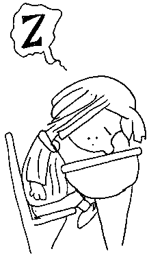

Threats to British Climbing?
(Neal Hockley)
You can hardly pick up a climbing mag these days without some interviewer asking the question or some "irate from Cheshire1", or "angry from Gwynedd2" answer it. Are there really threats to British clhnbing? Or is it just cushty after all. Do we worry too much or not enough? Well I'll tell you........
There are threats to British climbing, they're dangerous, they're all around us and I'll tell you what they are. Ok?
- Population explosion. More people, more cars, more roads, more houses etc. But more importantly we will see an increase in two parties loathsome types of people:
- Normal People. These are the people who stand at the bottom of the crag. These are the ones who ask you how 'high' you're going to climb that day and when you tell them about thirty feet they say, 'oh, just beginning then?'. These are the ones who criticise mums for dying on mountains. These are the ones who are garanteed to tell you they've 'been abseiling quite a few times'. These are the journalists who sensationalise and the people who ask why you use ropes 'cos that French bird goes much higher without'. These people are tiresome and idiotic and they don't see it. They don't understand.
- Climbers. It stands to reason, more people, more climbers. And climbers are BAD. They erode the paths, polish the crags, crap under the boulders, spend ages on your route, climb much harder than you do or much slower than you do. I hate climbers, ask anyone who knows me. Hate them.
- Climbing magazines. They publish letters from too many whinging ranting type people. If this sort of thing is allowed to continue, people might start to take this whole climbing thing seriously. I mean, come on.
- All people who:
- Think its a sport (??!!). I know, I think its ridiculous too, but some people have this strange notion...
- Don't have a beard.
- Anoraks. No seriously, they are starring to invade our glorious pastime. Just look around, they're there, you'll see them. I don't know if its the excuse to take thermoses, and packed lunches, wear waterproof clothing, the chance to talk endlessly about gadgets, or go without washing for a while. I don't know what it is, but whatever it is, we need to figure it out. And ban it. These people must be stopped.
- That smell that rock boots have.
- Women (see 3b).
There, I feel so much better.
These are the authors views, and do not necessarily agree with those of the CUMC, the publishers, their females or associates.
1Place chosen at random, no connection with Ken Wilson's home county intended. Me author denies any libel.
2Likewise Jim Perrin, just a coincidence. Weird.

Monday Morning Lectures: By Paul Palfreyman